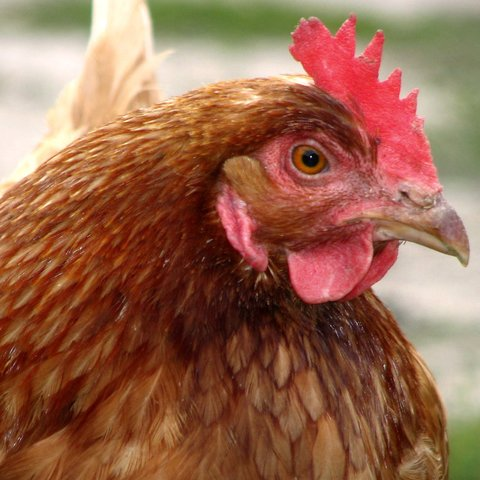

De kip

De kip (Gallus gallus domesticus) of het huishoen is een zeer bekende gedomesticeerde vogelsoort uit de familie van de fazantachtigen (Phasianidae), die weer behoort tot de orde der hoendervogels (Galliformes). Deze hoendersoort is tevens de meest voorkomende vogelsoort ter wereld. Er zijn op de wereld 52 miljard kippen. Er bestaat een zeer groot aantal rassen. Zie daarvoor de lijst van kippenrassen. In strikte zin verwijst de naam kip specifiek naar de vrouwelijke exemplaren van deze hoendersoort, de hennen. In Nederland echter wordt de naam kip veelal gebruikt voor de soort als geheel, dus ook de hanen.
Bron: Wikipedia